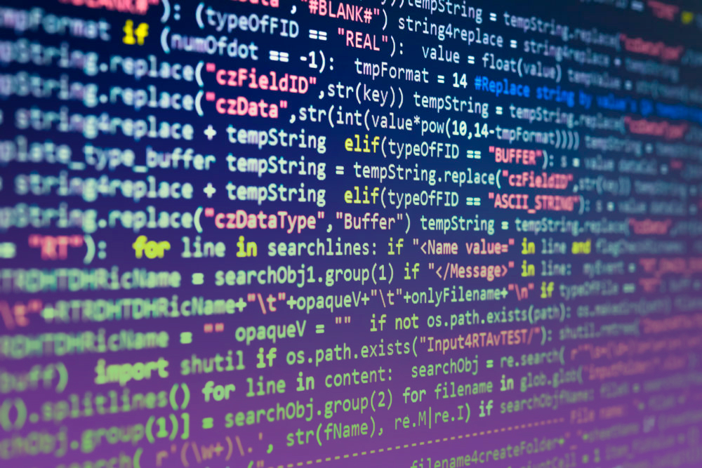

Novidades
📌 Projeto em andamento
Novo Projeto: Explorando o Mundo dos Sistemas de Informação e CRM
O CRM, ou Gestão de Relacionamento com o Cliente, é uma ferramenta essencial para empresas que desejam entender melhor seus clientes, melhorar a comunicação e otimizar a experiência geral.
Durante esse projeto, vou compartilhar insights sobre como o CRM pode transformar negócios e ajudar a construir relacionamentos mais fortes e duradouros.
Acompanhe essa jornada de aprendizado e descubra como as tecnologias de informação podem ser grandes aliadas na construção de uma gestão mais eficiente!

📌 Pesquisa em andamento
Ética Algorítmica: Desafios e Soluções para um Futuro Tecnológico Justo
Estou realizando uma pesquisa sobre Ética Algorítmica, explorando os desafios éticos do avanço tecnológico na sociedade da informação.
O foco está na responsabilidade dos algoritmos e das inteligências artificiais em decisões que impactam a privacidade, discriminação, transparência e responsabilidade.
Com o aumento da dependência de sistemas automatizados em setores como saúde, justiça e finanças, é crucial entender como esses algoritmos afetam o comportamento humano e os valores fundamentais da sociedade.
🔒 Nova jornada
Meu Projeto sobre Cibersegurança!
Tenho uma grande novidade pra compartilhar! Estou iniciando um projeto sobre cibersegurança, uma área essencial no mundo digital em que vivemos. Com o crescimento das ameaças cibernéticas, proteger dados e sistemas nunca foi tão importante.
O objetivo é explorar boas práticas, estratégias de defesa, conscientização e as principais tendências da área. Quero compartilhar conhecimento e ajudar a fortalecer a segurança digital de pessoas e empresas.
Fique ligado, porque em breve trarei mais detalhes! 💻🔒